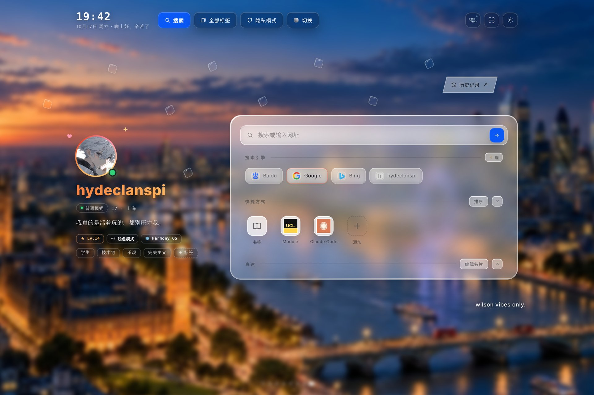

<!doctype html>
<html lang="zh-CN">
<head>
<meta charset="utf-8">
<title>Lucent · figures</title>
<!-- Documentation figures. Maps are computed by calling the engine's own functions in
     src/assets/interaction.js; nothing here re-implements the physics. Rendered to PNG by scripts/figures.mjs. -->
<style>
  :root { --surface: #0f151d; --ink: #ece6da; --muted: #98a1ab; --faint: #6c7580; --line: rgba(236, 230, 218, .14);
          --gold: #d8b98c; --ice: #8cc7ec; --serif: "Noto Serif CJK SC", "Songti SC", serif;
          --sans: "Noto Sans CJK SC", "PingFang SC", system-ui, sans-serif; --mono: "DejaVu Sans Mono", ui-monospace, monospace; }
  * { box-sizing: border-box; }
  html, body { margin: 0; background: var(--surface); }
  #figure { width: 1200px; padding: 44px 48px 36px; background: var(--surface); color: var(--ink); font-family: var(--sans); }
  .eyebrow { margin: 0 0 12px; font: 11px/1 var(--mono); letter-spacing: 2.6px; color: var(--gold); text-transform: uppercase; }
  h1 { margin: 0; font: 500 30px/1.25 var(--serif); letter-spacing: 1.2px; }
  .sub { margin: 10px 0 0; font-size: 14px; line-height: 1.7; color: var(--muted); letter-spacing: .3px; max-width: 980px; }
  .stage { position: relative; margin-top: 26px; }
  canvas, svg.diagram { display: block; }
  .note { margin: 18px 0 0; padding-top: 14px; border-top: 1px solid var(--line); font: 11.5px/1.7 var(--mono); color: var(--faint); letter-spacing: .2px; }
  .legend { display: flex; align-items: center; gap: 12px; margin-top: 14px; font-size: 12.5px; color: var(--muted); }
  .legend .bar { width: 220px; height: 8px; border-radius: 4px; }
</style>
</head>
<body>
<div id="figure"></div>
<script src="../../src/assets/interaction.js"></script>
<script>
"use strict";
const params = new URLSearchParams(location.search);
const FIG = params.get("fig") || "region";
const LANG = params.get("lang") === "en" ? "en" : "zh";
const T = window.AiraInteraction._test;
const t = (zh, en) => LANG === "en" ? en : zh;

// Obstacles measured from the live page at the 1560×1040 reference viewport.
const RECTS = [
  { name: t("顶栏", "Top bar"), left: 160, top: 0, right: 1400, bottom: 76 },
  { name: t("头像", "Avatar"), left: 200, top: 359, right: 304, bottom: 463 },
  { name: "", left: 200, top: 479, right: 436, bottom: 523 }, { name: "", left: 200, top: 535, right: 358, bottom: 560 },
  { name: "", left: 200, top: 574, right: 431, bottom: 601 }, { name: "", left: 200, top: 616, right: 477, bottom: 641 },
  { name: t("名片", "Profile"), left: 200, top: 653, right: 520, bottom: 679 },
  { name: t("主卡片", "Main card"), left: 604, top: 303, right: 1360, bottom: 736 },
  { name: t("历史记录", "History"), left: 1168, top: 201, right: 1301, bottom: 244 }
];
const W = 1560, H = 1040;
const geometry = T.makeGeometry(W, H, RECTS);
const sites = T.safeSites(geometry);

// ---- OKLab colour helpers (ramps are interpolated perceptually) ----
function srgbToLinear(c) { c /= 255; return c <= .04045 ? c / 12.92 : Math.pow((c + .055) / 1.055, 2.4); }
function linearToSrgb(c) { c = c <= .0031308 ? 12.92 * c : 1.055 * Math.pow(c, 1 / 2.4) - .055; return Math.round(Math.max(0, Math.min(1, c)) * 255); }
function hexToOklab(hex) {
  const n = parseInt(hex.slice(1), 16), r = srgbToLinear(n >> 16 & 255), g = srgbToLinear(n >> 8 & 255), b = srgbToLinear(n & 255);
  const l = Math.cbrt(.4122214708 * r + .5363325363 * g + .0514459929 * b), m = Math.cbrt(.2119034982 * r + .6806995451 * g + .1073969566 * b), s = Math.cbrt(.0883024619 * r + .2817188376 * g + .6299787005 * b);
  return [.2104542553 * l + .7936177850 * m - .0040720468 * s, 1.9779984951 * l - 2.4285922050 * m + .4505937099 * s, .0259040371 * l + .7827717662 * m - .8086757660 * s];
}
function oklabToRgb([L, a, b]) {
  const l = Math.pow(L + .3963377774 * a + .2158037573 * b, 3), m = Math.pow(L - .1055613458 * a - .0638541728 * b, 3), s = Math.pow(L - .0894841775 * a - 1.2914855480 * b, 3);
  return [linearToSrgb(4.0767416621 * l - 3.3077115913 * m + .2309699292 * s), linearToSrgb(-1.2684380046 * l + 2.6097574011 * m - .3413193965 * s), linearToSrgb(-.0041960863 * l - .7034186147 * m + 1.7076147010 * s)];
}
function ramp(stops) {
  const labs = stops.map(hexToOklab);
  return p => {
    p = Math.max(0, Math.min(1, p)) * (labs.length - 1);
    const i = Math.min(labs.length - 2, Math.floor(p)), f = p - i;
    return oklabToRgb(labs[i].map((v, k) => v + (labs[i + 1][k] - v) * f));
  };
}
const css = rgb => `rgb(${rgb[0]},${rgb[1]},${rgb[2]})`;

// ---- layout helpers ----
const root = document.getElementById("figure");
function header(n, title, sub) {
  root.insertAdjacentHTML("beforeend", `<p class="eyebrow">Lucent · ${t("图", "Fig.")} ${n}</p><h1>${title}</h1><p class="sub">${sub}</p><div class="stage" id="stage"></div>`);
  return document.getElementById("stage");
}
function footer(text) { root.insertAdjacentHTML("beforeend", `<p class="note">${text}</p>`); }
function canvas(stage, width, height) {
  const c = document.createElement("canvas"), dpr = window.devicePixelRatio || 1;
  c.width = Math.round(width * dpr); c.height = Math.round(height * dpr); c.style.width = width + "px"; c.style.height = height + "px";
  stage.appendChild(c); const ctx = c.getContext("2d"); ctx.scale(dpr, dpr); return ctx;
}
function roundRect(ctx, x, y, w, h, r) { ctx.beginPath(); ctx.roundRect(x, y, w, h, r); }
function polygonPath(ctx, map) { ctx.beginPath(); geometry.polygon.forEach((p, i) => { const q = map(p); i ? ctx.lineTo(q.x, q.y) : ctx.moveTo(q.x, q.y); }); ctx.closePath(); }
function lens(ctx, x, y, size, color, angle) {
  ctx.save(); ctx.translate(x, y); ctx.rotate(angle || -.42);
  roundRect(ctx, -size / 2, -size / 2, size, size, [size * .32, size * .14, size * .36, size * .14]);
  ctx.fillStyle = "rgba(220,240,255,.16)"; ctx.fill(); ctx.lineWidth = 1.2; ctx.strokeStyle = color || "rgba(236,246,255,.9)"; ctx.stroke();
  ctx.beginPath(); ctx.moveTo(-size * .25, -size * .32); ctx.lineTo(size * .22, -size * .36); ctx.strokeStyle = "rgba(255,255,255,.9)"; ctx.lineWidth = .9; ctx.stroke();
  ctx.restore();
}
// Marching squares for iso-lines on a regular grid of values (NaN = outside).
function isoLines(ctx, grid, cols, rows, x0, y0, step, level) {
  const at = (i, j) => grid[j * cols + i];
  const lerp = (a, b) => (level - a) / (b - a);
  ctx.beginPath();
  for (let j = 0; j < rows - 1; j++) for (let i = 0; i < cols - 1; i++) {
    const a = at(i, j), b = at(i + 1, j), c = at(i + 1, j + 1), d = at(i, j + 1);
    if ([a, b, c, d].some(v => !Number.isFinite(v))) continue;
    const pts = [];
    if ((a < level) !== (b < level)) pts.push([x0 + (i + lerp(a, b)) * step, y0 + j * step]);
    if ((b < level) !== (c < level)) pts.push([x0 + (i + 1) * step, y0 + (j + lerp(b, c)) * step]);
    if ((d < level) !== (c < level)) pts.push([x0 + (i + lerp(d, c)) * step, y0 + (j + 1) * step]);
    if ((a < level) !== (d < level)) pts.push([x0 + i * step, y0 + (j + lerp(a, d)) * step]);
    for (let k = 0; k + 1 < pts.length; k += 2) { ctx.moveTo(pts[k][0], pts[k][1]); ctx.lineTo(pts[k + 1][0], pts[k + 1][1]); }
  }
  ctx.stroke();
}
// A crop of the reference viewport around the drawn region.
const CROP = { x: 60, y: 92, w: 1240, h: 580 };
function cropMap(width) { const s = width / CROP.w; return { s, map: p => ({ x: (p.x - CROP.x) * s, y: (p.y - CROP.y) * s }), height: CROP.h * s }; }
function obstacles(ctx, map, s, labels) {
  RECTS.forEach(r => {
    const a = map({ x: r.left, y: r.top }), b = map({ x: r.right, y: r.bottom });
    roundRect(ctx, a.x, a.y, b.x - a.x, b.y - a.y, 10 * s);
    ctx.fillStyle = "rgba(236,230,218,.045)"; ctx.fill(); ctx.strokeStyle = "rgba(236,230,218,.16)"; ctx.lineWidth = 1; ctx.stroke();
    if (labels && r.name) {
      ctx.fillStyle = "rgba(236,230,218,.42)"; ctx.font = `12px ${getComputedStyle(document.body).getPropertyValue("--sans")}`;
      if (r.left === 604) ctx.fillText(r.name, a.x + 14, b.y - 16);
      else if (r.left === 1168) ctx.fillText(r.name, b.x + 10, a.y + 18);
      else if (r.left === 160) ctx.fillText(r.name, a.x + 12, a.y + 20);
      else if (r.top === 653) ctx.fillText(r.name, a.x + 10, b.y + 18);
      else ctx.fillText(r.name, a.x + 10, a.y + 20);
    }
  });
}

const figures = {
  region() {
    const stage = header("01", t("一块被手绘出来的留白", "A hand-drawn room"),
      t("红笔在截图上圈出的空白，被记录成 35 个顶点的多边形；再避开时钟、名片、主卡片与历史标签各 30 px。网格采样后只保留最大的连通腔室，缩放窗口时浮光也不会被隔断在两处。",
        "A red-pen outline on a screenshot became a 35-vertex polygon. The clock, profile, main card and history label are avoided by 30 px each. After grid sampling only the largest connected chamber is kept, so a resize can never strand two Lueurs apart."));
    const width = 1104, s = width / W, height = 780 * s, ctx = canvas(stage, width, height);
    const map = p => ({ x: p.x * s, y: p.y * s });
    roundRect(ctx, .5, .5, width - 1, height + 40, 14); ctx.strokeStyle = "rgba(236,230,218,.12)"; ctx.stroke();
    obstacles(ctx, map, s, true);
    // clearance band = area inside polygon but invalid
    polygonPath(ctx, map); ctx.fillStyle = "rgba(216,185,140,.07)"; ctx.fill();
    ctx.setLineDash([5, 5]); ctx.strokeStyle = "rgba(216,185,140,.85)"; ctx.lineWidth = 1.4; polygonPath(ctx, map); ctx.stroke(); ctx.setLineDash([]);
    geometry.polygon.forEach(p => { const q = map(p); ctx.beginPath(); ctx.arc(q.x, q.y, 2.4, 0, 7); ctx.fillStyle = "#d8b98c"; ctx.fill(); });
    sites.forEach(p => { const q = map(p); ctx.beginPath(); ctx.arc(q.x, q.y, 1.9, 0, 7); ctx.fillStyle = "rgba(140,199,236,.9)"; ctx.fill(); });
    ctx.font = "13px " + getComputedStyle(document.body).getPropertyValue("--mono");
    ctx.fillStyle = "#d8b98c"; ctx.fillText(t("35 个顶点 · 手绘边界", "35 vertices · hand-drawn edge"), 92 * s, 104 * s);
    ctx.fillStyle = "#8cc7ec"; ctx.fillText(t(`${sites.length} 个安全落点 · 24 px 网格`, `${sites.length} safe sites · 24 px grid`), 760 * s, 286 * s);
    const fade = ctx.createLinearGradient(0, height - 90, 0, height); fade.addColorStop(0, "rgba(15,21,29,0)"); fade.addColorStop(1, "rgba(15,21,29,1)");
    ctx.fillStyle = fade; ctx.fillRect(0, height - 90, width, 90);
    footer(t(`由 src/assets/interaction.js 的 makeGeometry() 与 safeSites() 直接计算 · 参考视口 1560×1040 · 一枚浮光视觉 22 px、触控 44 px`,
             `Computed by makeGeometry() and safeSites() in src/assets/interaction.js · 1560×1040 reference viewport · a Lueur is 22 px to the eye and 44 px to the finger`));
  },

  potential() {
    const stage = header("02", t("一张看不见的地形", "An invisible terrain"),
      t("拖动浮光时，它在势场 Φ 上走过的高度差占比例变化的 62%；其余来自与参照浮光的距离（20%）、绕行角（13%）和对方被推动的位移（5%）。主坡向让手感可学，两项正弦扰动让局部难以预料。",
        "While a Lueur is dragged, the height it climbs on the field Φ supplies 62% of the change in odds; distance to its reference neighbour adds 20%, the winding angle 13%, the neighbour's own displacement 5%. One main slope keeps the gesture learnable; two sinusoidal warps keep it surprising."));
    const width = 1104, { s, map, height } = cropMap(width), ctx = canvas(stage, width, height);
    const step = 4, cols = Math.ceil(CROP.w / step) + 1, rows = Math.ceil(CROP.h / step) + 1, grid = new Float64Array(cols * rows).fill(NaN);
    let values = [];
    for (let j = 0; j < rows; j++) for (let i = 0; i < cols; i++) {
      const p = { x: CROP.x + i * step, y: CROP.y + j * step };
      if (T.inPolygon(p, geometry.polygon) && !geometry.obstacles.some(r => p.x > r.left && p.x < r.right && p.y > r.top && p.y < r.bottom)) { const v = T.potential(p, geometry); grid[j * cols + i] = v; values.push(v); }
    }
    values.sort((a, b) => a - b);
    const mid = values[Math.floor(values.length / 2)], lo = values[0], hi = values[values.length - 1];
    const cool = ramp(["#3a414b", "#2f5f86", "#5f9ccc", "#a9d6f2"]), warm = ramp(["#3a414b", "#8a6a3c", "#c39a5e", "#ecd2a3"]);
    obstacles(ctx, map, s, false);
    for (let j = 0; j < rows; j++) for (let i = 0; i < cols; i++) {
      const v = grid[j * cols + i]; if (!Number.isFinite(v)) continue;
      const rgb = v >= mid ? warm((v - mid) / (hi - mid)) : cool((mid - v) / (mid - lo));
      ctx.fillStyle = css(rgb); ctx.fillRect((i * step - step / 2) * s, (j * step - step / 2) * s, step * s + .6, step * s + .6);
    }
    ctx.strokeStyle = "rgba(15,21,29,.55)"; ctx.lineWidth = 1;
    for (let level = Math.ceil(lo * 20) / 20; level < hi; level += .05) isoLines(ctx, grid, cols, rows, 0, 0, step * s, level);
    // Main slope arrow from the linear terms: +0.66 per span to the right, +0.25 per height upward.
    const ax = 860 * s, ay = 470 * s, gx = .66 / geometry.span, gy = -.25 / Math.max(120, geometry.bounds.bottom - geometry.bounds.top), g = Math.hypot(gx, gy), L = 120;
    ctx.strokeStyle = "#ece6da"; ctx.lineWidth = 1.4; ctx.beginPath(); ctx.moveTo(ax, ay); ctx.lineTo(ax + gx / g * L, ay + gy / g * L); ctx.stroke();
    const ex = ax + gx / g * L, ey = ay + gy / g * L, ang = Math.atan2(gy, gx);
    ctx.beginPath(); ctx.moveTo(ex, ey); ctx.lineTo(ex - 9 * Math.cos(ang - .45), ey - 9 * Math.sin(ang - .45)); ctx.moveTo(ex, ey); ctx.lineTo(ex - 9 * Math.cos(ang + .45), ey - 9 * Math.sin(ang + .45)); ctx.stroke();
    ctx.font = "13px " + getComputedStyle(document.body).getPropertyValue("--sans"); ctx.fillStyle = "#ece6da";
    ctx.fillText(t("主坡向", "main slope"), ax - 4, ay + 22);
    stage.insertAdjacentHTML("beforeend", `<div class="legend"><span>${t("偏 Dark", "toward Dark")}</span><span class="bar" style="background:linear-gradient(90deg,${css(cool(1))},${css(cool(.5))},#3a414b,${css(warm(.5))},${css(warm(1))})"></span><span>${t("偏 Light", "toward Light")}</span><span style="margin-left:18px;font-family:var(--mono);color:var(--faint)">Φ(u,v) = 0.66(u−½) − 0.25(v−½) + 0.10·sin(2πu + 1.1·sin πv) + 0.075·cos(2.8πv − ½πu)</span></div>`);
    footer(t("颜色为 potential() 在手绘区域内的实际取值（以中位数为中性点），细线为 0.05 等值线 · 最陡处每像素约 0.0026，单次手势的总变化被限制在 ±0.35",
             "Colour is the actual value of potential() inside the drawn region, centred on its median; fine lines are 0.05 contours · the steepest slope is about 0.0026 per pixel, and one gesture moves the odds by at most ±0.35"));
  },

  placement() {
    const stage = header("03", t("落子与星座", "Placement and constellations"),
      t("三枚浮光已落在左上角。下一枚的落点权重：贴近簇旁的位置被拥挤与近距惩罚压到最暗；能填补最大一片「沙漠」的位置最亮——远距惩罚在这里让路。只惩罚沙漠，不奖励整齐。",
        "Three Lueurs have already landed at the upper left. Weights for the next one: spots beside the cluster are darkest, pushed down by crowding and closeness; spots that shrink the largest desert are brightest — the distance penalty yields there. Deserts are punished; neatness is never rewarded."));
    const width = 1104, { s, map, height } = cropMap(width), ctx = canvas(stage, width, height);
    const placed = [{ x: 288, y: 168 }, { x: 264, y: 168 }, { x: 288, y: 192 }];
    const step = 4, candidates = [];
    for (let y = CROP.y; y <= CROP.y + CROP.h; y += step) for (let x = CROP.x; x <= CROP.x + CROP.w; x += step) {
      const p = { x, y }; if (geometry.valid(p) && placed.every(o => Math.hypot(o.x - x, o.y - y) >= 24)) candidates.push(p);
    }
    const weights = T.placementWeights(candidates, placed, 1, null, sites), max = Math.max(...weights);
    const seq = ramp(["#18232f", "#1f4766", "#3f7fae", "#8cc7ec", "#e4f3fc"]);
    obstacles(ctx, map, s, false);
    candidates.forEach((p, i) => { const q = map(p); ctx.fillStyle = css(seq(Math.pow(weights[i] / max, .55))); ctx.fillRect(q.x - step * s / 2, q.y - step * s / 2, step * s + .6, step * s + .6); });
    placed.forEach((p, i) => { const q = map(p); lens(ctx, q.x, q.y, 16, "rgba(236,246,255,.95)", i ? .3 : -.4); });
    const best = candidates[weights.indexOf(max)], bq = map(best);
    ctx.beginPath(); ctx.arc(bq.x, bq.y, 14, 0, 7); ctx.strokeStyle = "#ece6da"; ctx.lineWidth = 1.2; ctx.stroke();
    ctx.font = "13px " + getComputedStyle(document.body).getPropertyValue("--sans"); ctx.fillStyle = "#ece6da";
    ctx.fillText(t("最可能的下一步", "most likely next move"), bq.x + 22, bq.y - 18);
    const cq = map({ x: 276, y: 180 }); ctx.fillText(t("已落下的三枚", "three already placed"), cq.x - 20, cq.y + 42);
    stage.insertAdjacentHTML("beforeend", `<div class="legend"><span>${t("权重低", "low weight")}</span><span class="bar" style="background:linear-gradient(90deg,${[0, .25, .5, .75, 1].map(v => css(seq(v))).join(",")})"></span><span>${t("权重高", "high weight")}</span><span style="margin-left:18px;font-family:var(--mono);color:var(--faint)">w = e^(−0.8·close − 0.9·crowd − 1.8·void) · e^(−1.6·far·γ) · top · vertical</span></div>`);
    footer(t("由 placementWeights() 在 4 px 候选网格上直接计算（未加每局随机的「心情」抖动）· γ = 0.15 当该落点能缩小最大沙漠，否则为 1 · 颜色按权重的 0.55 次幂映射以显出结构",
             "Computed by placementWeights() on a 4 px candidate grid (without the per-arrival mood jitter) · γ = 0.15 when the spot shrinks the largest desert, otherwise 1 · colour maps weight^0.55 to show structure"));
  },

  speeds() {
    const stage = header("04", t("激光的速度从哪里来", "Where each laser's speed comes from"),
      t("Random 开启后，蓝白激光沿卡片之间的通道奔跑。每一束的速度独立抽样：以 4.8.3 版为基准的截断正态分布 N(0.70, 0.10²)，超出 ±3σ 重抽。抽的是速度而不是时长，所以快慢在视觉上是对称的。",
        "With Random on, blue-white lasers run through the channels between cards. Each pulse samples its own speed from a normal distribution N(0.70, 0.10²) relative to version 4.8.3, redrawn beyond ±3σ. Speed, not duration, is sampled, so fast and slow feel symmetric."));
    const width = 1104, height = 400, ctx = canvas(stage, width, height);
    const left = 70, right = width - 30, top = 30, bottom = height - 56;
    const x = v => left + (v - .4) / .6 * (right - left), pdf = v => Math.exp(-.5 * Math.pow((v - .7) / .1, 2));
    const y = d => bottom - d * (bottom - top);
    ctx.strokeStyle = "rgba(236,230,218,.10)"; ctx.lineWidth = 1;
    [0, .25, .5, .75, 1].forEach(d => { ctx.beginPath(); ctx.moveTo(left, y(d)); ctx.lineTo(right, y(d)); ctx.stroke(); });
    const bands = [[.4, .5, .22], [.5, .6, .42], [.6, .8, .78], [.8, .9, .42], [.9, 1, .22]];
    bands.forEach(([a, b, alpha]) => {
      ctx.beginPath(); ctx.moveTo(x(a), y(0));
      for (let v = a; v <= b + 1e-9; v += .002) ctx.lineTo(x(v), y(pdf(v)));
      ctx.lineTo(x(b), y(0)); ctx.closePath(); ctx.fillStyle = `rgba(140,199,236,${alpha})`; ctx.fill();
      ctx.strokeStyle = "#0f151d"; ctx.lineWidth = 2; ctx.beginPath(); ctx.moveTo(x(b), y(0)); ctx.lineTo(x(b), y(pdf(b))); ctx.stroke();
    });
    ctx.beginPath(); for (let v = .4; v <= 1.0001; v += .002) { const px = x(v), py = y(pdf(v)); v === .4 ? ctx.moveTo(px, py) : ctx.lineTo(px, py); }
    ctx.strokeStyle = "#cfe9fb"; ctx.lineWidth = 2; ctx.stroke();
    ctx.font = "13px " + getComputedStyle(document.body).getPropertyValue("--mono"); ctx.fillStyle = "#98a1ab"; ctx.textAlign = "center";
    [.4, .5, .6, .7, .8, .9, 1].forEach(v => ctx.fillText(v.toFixed(2) + "×", x(v), bottom + 22));
    ctx.fillStyle = "#ece6da"; ctx.font = "15px " + getComputedStyle(document.body).getPropertyValue("--sans");
    ctx.fillText("68.5%", x(.7), y(.62)); ctx.fillText("13.6%", x(.55), y(.42)); ctx.fillText("13.6%", x(.85), y(.42));
    ctx.fillStyle = "#98a1ab"; ctx.fillText("2.15%", x(.45), y(.16)); ctx.fillText("2.15%", x(.95), y(.16));
    ctx.textAlign = "left"; ctx.font = "12.5px " + getComputedStyle(document.body).getPropertyValue("--sans"); ctx.fillStyle = "#98a1ab";
    ctx.fillText(t("相对 4.8.3 的速度倍数", "speed relative to 4.8.3"), right - 170, bottom + 44);
    footer(t("Box–Muller 变换抽样，|z| > 3 时重抽 · 时长 = 680 ms（横向）或 840 ms（纵向）÷ 速度 · 每一波 73% 单束、20% 双束、7% 三束，车道不放回抽取，同一通道不会对撞 · 下一波等上一波最长一束结束再出发",
             "Box–Muller sampling, redrawn when |z| > 3 · duration = 680 ms (horizontal) or 840 ms (vertical) ÷ speed · each wave is 73% single, 20% double, 7% triple, lanes drawn without replacement so no two pulses meet head-on · the next wave waits for the longest pulse to finish"));
  }
};
// ---- diagrams (SVG) ----
const NS = "http://www.w3.org/2000/svg";
function svg(stage, width, height, top = 0) {
  const node = document.createElementNS(NS, "svg");
  node.setAttribute("viewBox", `0 ${top} ${width} ${height}`); node.setAttribute("width", width); node.setAttribute("height", height); node.classList.add("diagram");
  node.innerHTML = `<defs><marker id="arrow" viewBox="0 0 10 10" refX="9" refY="5" markerWidth="7" markerHeight="7" orient="auto-start-reverse"><path d="M0 0 L10 5 L0 10 z" fill="#c9c2b6"/></marker>
    <marker id="arrow-gold" viewBox="0 0 10 10" refX="9" refY="5" markerWidth="7" markerHeight="7" orient="auto-start-reverse"><path d="M0 0 L10 5 L0 10 z" fill="#d8b98c"/></marker></defs>`;
  stage.appendChild(node); return node;
}
function el(parent, tag, attrs, text) {
  const node = document.createElementNS(NS, tag);
  Object.entries(attrs || {}).forEach(([k, v]) => node.setAttribute(k, v));
  if (text != null) node.textContent = text;
  parent.appendChild(node); return node;
}
function label(parent, x, y, text, opts = {}) {
  return el(parent, "text", { x, y, fill: opts.fill || "#ece6da", "font-size": opts.size || 14, "font-family": opts.mono ? "DejaVu Sans Mono, monospace" : opts.serif ? "Noto Serif CJK SC, serif" : "Noto Sans CJK SC, sans-serif", "text-anchor": opts.anchor || "start", "font-weight": opts.weight || 400, "letter-spacing": opts.spacing || 0 }, text);
}
function multiline(parent, x, y, lines, opts = {}) { lines.forEach((line, i) => label(parent, x, y + i * (opts.lh || 20), line, opts)); }
function node(parent, x, y, w, h, title, latin, lines, color) {
  el(parent, "rect", { x, y, width: w, height: h, rx: 16, fill: "rgba(236,230,218,.035)", stroke: color, "stroke-width": 1.3 });
  label(parent, x + 18, y + 32, title, { size: 19, serif: true });
  label(parent, x + 18 + title.length * 20 + 8, y + 32, latin, { size: 12, mono: true, fill: color });
  multiline(parent, x + 18, y + 58, lines, { size: 12.5, fill: "#98a1ab", lh: 19 });
}

Object.assign(figures, {
  fsd() {
    const stage = header("05", t("Drive (FSD)：一枚开关的两段性格", "Drive (FSD): one switch, two temperaments"),
      t("点一次是淡蓝巡航，再点一次是暖橙增强。被选中的驾驶员在四个状态之间循环；阵容每 11.5 秒（±20%）重抽一次，靠近的一对「密友」可以接过方向盘。驾驶从不改写壁纸概率，也不计入人的交互。",
        "One tap is pale-blue cruise; a second is warm-orange boost. Drivers cycle through four states; the line-up is redrawn every 11.5 s (±20%), and a close pair of \"friends\" may take the wheel. Driving never writes the wallpaper odds and is never counted as a human interaction."));
    const width = 1104, height = 452, g = svg(stage, width, height, 64);
    const ice = "#8cc7ec", warm = "#e8be94", neutral = "#c9c2b6";
    node(g, 24, 150, 236, 120, t("巡航", "Roam"), "roam", t(["在 65–240 px 外随机", "选一处路标，0.5–1.5 s", "后开始寻找目标"], ["picks a waypoint 65–240 px", "away, then looks for a", "target after 0.5–1.5 s"]), ice);
    node(g, 316, 150, 236, 120, t("追逐", "Chase"), "chase", t(["从最近的 4 位里挑一位，", "不追上一次的目标；BFS", "路径每 0.75 s 重算"], ["one of the 4 nearest, never", "the last target; the BFS", "route is re-planned every 0.75 s"]), ice);
    node(g, 608, 150, 236, 120, t("冲刺", "Charge"), "charge", t(["可视且 < 160 px：预判", "0.18 s 后的位置，速度 ×1.7，", "转向 ≤ 3.4 rad/s"], ["visible and < 160 px: aims at", "where the target will be in", "0.18 s, ×1.7 speed, ≤ 3.4 rad/s"]), warm);
    node(g, 868, 150, 212, 120, t("滑行", "Coast"), "coast", t(["撞上后滑行 0.9–1.8 s，", "这一对的接触在分开前", "不会再次充能"], ["glides 0.9–1.8 s after a hit;", "the pair cannot recharge", "until it separates"]), neutral);
    const arrow = (d, gold) => el(g, "path", { d, fill: "none", stroke: gold ? "#d8b98c" : "#c9c2b6", "stroke-width": 1.3, "marker-end": `url(#${gold ? "arrow-gold" : "arrow"})` });
    arrow("M260 210 L314 210"); arrow("M552 210 L606 210", true); arrow("M844 210 L866 210", true);
    arrow("M974 270 C 974 360, 434 360, 434 272");
    label(g, 704, 352, t("重新规划", "re-plan"), { size: 12.5, fill: "#98a1ab", anchor: "middle" });
    arrow("M726 150 C 726 92, 142 92, 142 148");
    label(g, 434, 86, t("1.8 s 内没撞上：记一次「扑空」", "no contact within 1.8 s: logged as a miss"), { size: 12.5, fill: "#98a1ab", anchor: "middle" });
    label(g, 579, 236, t("看见了", "in sight"), { size: 11.5, fill: "#d8b98c", anchor: "middle" });
    // strike formula
    el(g, "rect", { x: 608, y: 392, width: 472, height: 108, rx: 14, fill: "rgba(232,190,148,.06)", stroke: "rgba(232,190,148,.35)" });
    label(g, 628, 422, t("撞击：等质量、动量守恒，马达冲量有上限", "Strike: equal masses, momentum conserved, bounded motor"), { size: 13.5 });
    label(g, 628, 452, "J = ½(1+e)·v_close + min(320, v_close·(k−1)·0.4)", { size: 13, mono: true, fill: "#e8be94" });
    label(g, 628, 480, t("e = 0.64 · k = 碰撞力度 1–24× · 相对速度在冲量之前取样", "e = 0.64 · k = collision strength 1–24× · speed sampled before the impulse"), { size: 12, fill: "#98a1ab" });
    el(g, "rect", { x: 24, y: 392, width: 556, height: 108, rx: 14, fill: "rgba(140,199,236,.05)", stroke: "rgba(140,199,236,.3)" });
    multiline(g, 44, 422, t([
      "阵容：巡航 ⌈n/5⌉ … ⌊n/2⌋ 位；增强 ×3，最多全场（10 枚时 2–5 → 6–10）",
      "接力：被撞者有 18% 接过方向盘（间隔 ≥ 6 s）· 卡住 0.65 s 改道逃逸",
      "密友得舵：无驾驶员的近邻对（< 92 px）从落单的驾驶员手里接舵",
      "手动接管：被手抓住的浮光立刻让出驾驶，松手后滑行 1.25 s"
    ], [
      "Line-up: cruise ⌈n/5⌉ … ⌊n/2⌋ drivers; boost ×3 up to all (10 Lueurs: 2–5 → 6–10)",
      "Relay: 18% chance the struck lens takes the wheel (≥ 6 s apart) · stuck 0.65 s → escape",
      "Friends at the wheel: a driverless close pair (< 92 px) takes over from a lonely driver",
      "Hand override: a held Lueur yields at once and coasts 1.25 s after release"
    ]), { size: 12.5, fill: "#c9c2b6", lh: 21 });
    footer(t("src/assets/interaction.js · reconcileDrivers / planDriver / driveBody / automaticImpact · 路径为安全落点四邻接网格上的广度优先搜索，再按视线化简",
             "src/assets/interaction.js · reconcileDrivers / planDriver / driveBody / automaticImpact · routes are breadth-first searches on the 4-connected grid of safe sites, simplified by line of sight"));
  },

  glass() {
    const stage = header("06", t("通透玻璃：六个参数，六层光学", "Lucent Glass: six parameters, six optical layers"),
      t("同一种玻璃承担阅读、操作和装饰三种用途。六个 0–100 的参数先映射成 CSS 变量，再分配到六层；滤镜只作用在装饰层，文字、图标与数据始终在独立前景，清晰度不受影响。",
        "One glass serves reading, operating and ornament. Six 0–100 parameters map to CSS variables that feed six layers; filters touch only the decorative layers, so text, icons and data stay in a separate, crisp foreground."));
    const width = 1104, height = 560, g = svg(stage, width, height);
    const layers = t([
      ["内容", "文字 · 图标 · 数据，独立前景，不被滤镜", "#ece6da"],
      ["跟手高光", "360 px 径向高光跟随指针，按帧合并，230 ms 淡入", "#f3ead9"],
      ["边缘厚度", "1.5 px 渐变描边（mask-composite: exclude）＋四道内缘线", "#d8b98c"],
      ["环境冷暖", "左上暖光、右下冷光两束反射，随壁纸调色", "#c9a98a"],
      ["底色", "径向＋123° 线性色层，透明度驱动 alpha", "#9fb6c7"],
      ["背景采样", "backdrop-filter：blur · saturate · brightness", "#8cc7ec"]
    ], [
      ["Content", "text · icons · data, a separate foreground, never filtered", "#ece6da"],
      ["Touch sheen", "a 360 px highlight follows the pointer, one write per frame", "#f3ead9"],
      ["Rim", "a 1.5 px gradient ring (mask-composite: exclude) + four inset edges", "#d8b98c"],
      ["Ambient", "warm light upper left, cool lower right, tinted per wallpaper", "#c9a98a"],
      ["Bed", "radial + 123° linear tones; transparency drives alpha", "#9fb6c7"],
      ["Backdrop", "backdrop-filter: blur · saturate · brightness", "#8cc7ec"]
    ]);
    layers.forEach(([name, desc, color], i) => {
      const y = 40 + i * 78, x = 300;
      el(g, "path", { d: `M${x} ${y + 40} L${x + 120} ${y} L${x + 420} ${y} L${x + 300} ${y + 40} Z`, fill: color, "fill-opacity": i === 0 ? .06 : .09 + i * .015, stroke: color, "stroke-opacity": .75, "stroke-width": 1.2 });
      label(g, x + 450, y + 18, name, { size: 16, serif: true, fill: color });
      label(g, x + 450, y + 40, desc, { size: 12.5, fill: "#98a1ab" });
    });
    const params = t(["通透度", "玻璃柔焦", "暖意", "边缘光泽", "环境色彩", "触光强度"], ["Clarity", "Softness", "Warmth", "Edge", "Colour", "Touch"]);
    label(g, 24, 64, t("六个参数", "Six parameters"), { size: 15, serif: true });
    params.forEach((p, i) => {
      const y = 96 + i * 46;
      el(g, "rect", { x: 24, y: y - 20, width: 196, height: 32, rx: 9, fill: "rgba(236,230,218,.04)", stroke: "rgba(236,230,218,.16)" });
      label(g, 40, y + 1, p, { size: 13.5 });
      el(g, "line", { x1: 120, y1: y - 4, x2: 204, y2: y - 4, stroke: "rgba(236,230,218,.25)", "stroke-width": 2, "stroke-linecap": "round" });
      el(g, "circle", { cx: 120 + 84 * [.5, .5, .5, .5, .5, .5][i], cy: y - 4, r: 4.5, fill: "#ece6da" });
    });
    el(g, "path", { d: "M222 250 C 262 250, 262 250, 296 250", fill: "none", stroke: "#c9c2b6", "stroke-width": 1.3, "marker-end": "url(#arrow)" });
    multiline(g, 24, 400, t(["主卡片与弹窗各自一套参数，", "可选「经典磨砂」或「暖光液态清璃」。", "静止时没有任何常驻动画循环。"],
      ["The home card and the sheets each keep", "their own set, in Classic Frost or", "Warm Clear. Nothing animates at rest."]), { size: 12.5, fill: "#98a1ab", lh: 20 });
    footer(t("src/assets/glass-material.js · renderSettings() 把参数映射为 --beta-alpha / --beta-blur / --beta-edge / --beta-saturation 与冷暖色 · src/assets/glass-material.css 负责分层 · 不支持背景滤镜或「减少透明度」时退回到实底",
             "src/assets/glass-material.js · renderSettings() maps parameters to --beta-alpha / --beta-blur / --beta-edge / --beta-saturation and the warm/cool tints · src/assets/glass-material.css stacks the layers · a solid fallback when backdrop filters are missing or reduced transparency is requested"));
  },

  storage() {
    const stage = header("07", t("场志：长期使用之后，数据依然可信", "The chronicle: data that stays trustworthy"),
      t("两套存储共用同一条纪律：快照写入两个槽位轮流覆盖，每份都带版本号与校验和；读取时取最新的有效一份，读失败绝不拿空数据覆盖旧历史。历史按时间分层合并，在预算之内越老越粗，但总量从不丢失。",
        "Both stores share one discipline: snapshots alternate between two slots, each with a revision and a checksum; reads take the newest valid one, and a failed read never overwrites history with emptiness. Older history merges into coarser tiers within a byte budget, and totals are never lost."));
    const width = 1104, height = 560, g = svg(stage, width, height);
    // dual slot
    label(g, 24, 30, t("双槽轮写", "Two slots, alternating"), { size: 16, serif: true });
    [["A", 0], ["B", 1]].forEach(([name, i]) => {
      const x = 24 + i * 250;
      el(g, "rect", { x, y: 52, width: 226, height: 118, rx: 14, fill: "rgba(140,199,236,.05)", stroke: "rgba(140,199,236,.45)" });
      label(g, x + 16, 80, t(`槽位 ${name}`, `Slot ${name}`), { size: 14 });
      multiline(g, x + 16, 106, [`rev ${i ? "n + 1" : "n"}`, "checksum · FNV-1a", t("规范化 JSON（键排序）", "canonical JSON (sorted keys)")], { size: 12, mono: true, fill: "#98a1ab", lh: 19 });
    });
    el(g, "path", { d: "M138 172 C 138 214, 362 214, 362 174", fill: "none", stroke: "#d8b98c", "stroke-width": 1.3, "marker-end": "url(#arrow-gold)" });
    label(g, 250, 226, t("下一次写入总落在另一个槽", "the next write always lands in the other slot"), { size: 12, fill: "#d8b98c", anchor: "middle" });
    multiline(g, 24, 262, t([
      "读取：两槽都解码校验，取 rev 最大的有效快照",
      "一槽损坏：从另一槽恢复，并如实提示可能缺失的最新变化",
      "读取失败：保持原数据，不写空表；写入串行、按预算拒写"
    ], [
      "Read: decode and verify both, take the newest valid rev",
      "One slot corrupt: recover from the other and say what may be missing",
      "Read failure: keep the data, never write an empty table; writes are serial and budgeted"
    ]), { size: 12.5, fill: "#c9c2b6", lh: 22 });
    // compaction tiers
    label(g, 560, 30, t("历史统计 · 时间分层（预算 160 KiB）", "History · time tiers (160 KiB budget)"), { size: 16, serif: true });
    const tiers = t([["小时", "最近 6 天"], ["天", "一年之内"], ["月", "十年之内"], ["年", "更早"]], [["Hours", "last 6 days"], ["Days", "within a year"], ["Months", "within ten years"], ["Years", "older"]]);
    tiers.forEach(([unit, span], i) => {
      const x = 560 + i * 132, w = 120 - i * 6;
      el(g, "rect", { x, y: 56, width: w, height: 64, rx: 12, fill: `rgba(216,185,140,${.16 - i * .03})`, stroke: "rgba(216,185,140,.5)" });
      label(g, x + 14, 84, unit, { size: 15, serif: true });
      label(g, x + 14, 106, span, { size: 11.5, fill: "#98a1ab" });
      if (i < 3) el(g, "path", { d: `M${x + w + 2} 88 L${x + 130} 88`, stroke: "#c9c2b6", "stroke-width": 1.2, "marker-end": "url(#arrow)" });
    });
    multiline(g, 560, 152, t([
      "每个时间桶 28 个整数：样本数、总和、最小、最大、四类来源、20 档分布",
      "解码时校验不变量：分布之和 = 来源之和 = 样本数，min ≤ 均值 ≤ max",
      "合并按样本数加权；不存每次拖动的时刻、坐标或事件明细"
    ], [
      "Each bucket is 28 integers: count, sum, min, max, four sources, a 20-bin distribution",
      "Decoding checks invariants: bins sum = sources sum = count, min ≤ mean ≤ max",
      "Merges are count-weighted; no drag timestamps, coordinates or event logs are kept"
    ]), { size: 12.5, fill: "#c9c2b6", lh: 22 });
    label(g, 560, 250, t("场志（预算 96 KiB）", "Field chronicle (96 KiB budget)"), { size: 16, serif: true });
    const cells = t([
      ["49", "位个体档案 × 10 项计数"], ["≤ 300", "对关系 · 上三角矩阵"], ["200", "条最近事件 · 环形缓冲"], ["26 × 12", "驻留热力网格 · 日 40 天 / 月 18 个月"], ["14", "档碰撞相对速度 · 非线性分档"]
    ], [
      ["49", "individual files × 10 counters"], ["≤ 300", "pairs · upper-triangular"], ["200", "recent events · ring buffer"], ["26 × 12", "residency grid · 40 days / 18 months"], ["14", "relative-speed bins · non-linear"]
    ]);
    cells.forEach(([num, text], i) => {
      const y = 280 + i * 40;
      label(g, 560, y, num, { size: 18, mono: true, fill: "#8cc7ec" });
      label(g, 660, y - 1, text, { size: 13, fill: "#c9c2b6" });
    });
    el(g, "rect", { x: 24, y: 352, width: 500, height: 132, rx: 14, fill: "rgba(216,185,140,.05)", stroke: "rgba(216,185,140,.35)" });
    multiline(g, 44, 382, t([
      "改分档时不清零：旧分布按区间重叠重投影到新档位，",
      "最大余额法补足取整差，总量一分不差。",
      "网格守卫：形状不符先按比例重采样，再写入，",
      "避免越界写出空洞后被静默归零。"
    ], [
      "Re-binning never zeroes history: old counts are re-projected",
      "by interval overlap; the largest-remainder method settles the",
      "rounding, so the total is exact. A grid guard resamples a",
      "mismatched shape before writing, so nothing silently becomes 0."
    ]), { size: 12.5, fill: "#ece6da", lh: 22 });
    footer(t("src/assets/stats-store.js · src/assets/field-store.js · 备份文本 AIRAPC1：deflate-raw 压缩 → base64url → CRC-32，复制前按同一格式回读自检，超长时按段切分",
             "src/assets/stats-store.js · src/assets/field-store.js · the AIRAPC1 backup text is deflate-raw → base64url → CRC-32, read back in the same format before copying, and segmented when long"));
  }
});

// ---- architecture & gesture map ----
function hexA(hex, a) { const n = parseInt(hex.slice(1), 16); return `rgba(${n >> 16 & 255},${n >> 8 & 255},${n & 255},${a})`; }
function box(g, x, y, w, h, color, title, latin, lines, opts = {}) {
  el(g, "rect", { x, y, width: w, height: h, rx: 13, fill: hexA(color, opts.fill || .055), stroke: hexA(color, opts.stroke || .5), "stroke-width": 1.2 });
  const t0 = label(g, x + 16, y + 28, title, { size: opts.titleSize || 16, serif: true, fill: opts.titleFill || "#ece6da" });
  if (latin) label(g, x + 16 + t0.getComputedTextLength() + 10, y + 28, latin, { size: 11, mono: true, fill: color, spacing: .6 });
  multiline(g, x + 16, y + (opts.first || 52), lines, { size: opts.size || 12.5, fill: opts.lineFill || "#a9b1ba", lh: opts.lh || 19 });
}
function chip(g, x, y, w, text, color) {
  el(g, "rect", { x, y, width: w, height: 34, rx: 17, fill: hexA(color, .07), stroke: hexA(color, .42), "stroke-width": 1 });
  label(g, x + w / 2, y + 22, text, { size: 12.5, fill: "#e6dccb", anchor: "middle" });
}

Object.assign(figures, {
  architecture() {
    const stage = header("00", t("产品架构：从一块屏幕，到一个像素", "Architecture: from one screen to one pixel"),
      t("自上而下，由宏观到微观：它在哪里运行，表面摆着什么，底下运转着哪四套系统，系统靠什么机制成立，以及最后落到像素的那些决定。最下面一行贯穿所有层级：把每个旋钮交给使用者的主权，和让一切经得起长期使用的工程纪律。",
        "Top to bottom, macro to micro: where it runs, what sits on the surface, the four systems underneath, the mechanisms that make them work, and the decisions that finally land on a pixel. The bottom row cuts across every layer: the controls handed to the person who uses it, and the engineering discipline that keeps it trustworthy over years."));
    const W0 = 1104, LX = 152, CW = W0 - LX, g = svg(stage, W0, 812);
    const ice = "#8cc7ec", blue = "#a3b8ff", plat = "#d3c5a2", warm = "#e8be94", gold = "#d8b98c", grey = "#c9c2b6", mute = "#98a1ab", mint = "#93cdb5";
    const tiers = [
      ["L0", t("场景", "Context"), t("在哪里运行", "where it runs"), 6, 86],
      ["L1", t("基地", "Base"), t("表面", "the surface"), 108, 106],
      ["L2", t("系统", "Systems"), t("底下的四套", "four underneath"), 230, 68],
      ["L3", t("机制", "Mechanisms"), t("为什么成立", "why it works"), 314, 196],
      ["L4", t("像素", "Pixels"), t("最后的决定", "final decisions"), 526, 100]
    ];
    // spine: macro → micro
    const spine = el(g, "defs", {});
    spine.innerHTML = `<linearGradient id="spine" gradientUnits="userSpaceOnUse" x1="0" y1="16" x2="0" y2="618"><stop offset="0" stop-color="${ice}"/><stop offset="1" stop-color="${gold}"/></linearGradient>`;
    el(g, "line", { x1: 10, y1: 16, x2: 10, y2: 618, stroke: "url(#spine)", "stroke-width": 2, "stroke-linecap": "round" });
    el(g, "path", { d: "M4 610 L10 624 L16 610", fill: "none", stroke: gold, "stroke-width": 2, "stroke-linejoin": "round" });
    tiers.forEach(([n, name, hint, y, h]) => {
      el(g, "circle", { cx: 10, cy: y + 26, r: 4.5, fill: "#0f151d", stroke: "#ece6da", "stroke-width": 1.4 });
      label(g, 26, y + 22, n, { size: 11, mono: true, fill: gold, spacing: 1 });
      label(g, 26, y + 46, name, { size: 18, serif: true });
      label(g, 26, y + 66, hint, { size: 11.5, fill: mute });
    });
    const cols = (n, gap) => { const w = (CW - gap * (n - 1)) / n; return Array.from({ length: n }, (_, i) => LX + i * (w + gap)).map(x => [x, w]); };
    // L0
    const c3 = cols(3, 12);
    box(g, c3[0][0], 6, c3[0][1], 86, mute, t("一块屏幕", "One screen"), "screen", t(["MatePad Edge · 14.2″ 3:2 OLED", "3120×2080 → 1560×1040 CSS · 触屏优先"], ["MatePad Edge · 14.2″ 3:2 OLED", "3120×2080 → 1560×1040 CSS · touch first"]));
    box(g, c3[1][0], 6, c3[1][1], 86, mute, t("宿主", "Host"), "host", t(["鸿蒙 Aira 浏览器的自定义主页", "原生安装包按交付原样保存"], ["custom homepage of the Aira browser", "on HarmonyOS; native package kept as shipped"]));
    box(g, c3[2][0], 6, c3[2][1], 86, mute, t("网页版", "Web edition"), "web", t(["浏览器演示层 · 一键直达链接", "沉浸全屏 · 可安装为应用"], ["browser layer · deep links", "immersive full screen · installable"]));
    // L1
    box(g, c3[0][0], 108, c3[0][1], 106, grey, t("顶栏", "Top bar"), "top bar", t(["时钟与问候 · 搜索 · 全部标签", "隐私模式 · 切换", "FSD · 星球 · 扫一扫 · 太阳"], ["clock & greeting · Search · All tabs", "Private · Switch", "FSD · planet · scan · sun"]));
    box(g, c3[1][0], 108, c3[1][1], 106, grey, t("名片", "Profile"), "profile", t(["头像光环 · 名字流光 · 状态", "签名 · 徽章 · 标签"], ["avatar ring · gradient name · status", "signature · badges · tags"]));
    box(g, c3[2][0], 108, c3[2][1], 106, grey, t("主卡片", "Main card"), "card", t(["搜索框 · 搜索引擎 · 快捷方式", "直达 · 日志 · 历史记录"], ["search · engines · shortcuts", "direct entries · note · history"]));
    // L2 + L3 in four aligned columns
    const c4 = cols(4, 12);
    const systems = [
      [ice, t("生态", "Alive"), "lueurs", t(["小浮光 Lueurs · 场志"], ["Lueurs · the chronicle"]),
        t(["Ornstein–Uhlenbeck 航向", "4 px 子步进 · 冲量 e = 0.64", "FSD：广度优先寻路 · 四状态", "邂逅：150 px 圈 · 70% 立案", "落子：只罚沙漠与拥挤", "拖动 → 势场 Φ → 壁纸权重", "49 位身份 · 关系谱 · 事件环", "双槽校验 · 分层压缩"],
          ["Ornstein–Uhlenbeck heading", "4 px sub-steps · impulse e = 0.64", "FSD: breadth-first routes", "encounters: 150 px · 70%", "placement punishes deserts", "drag → potential Φ → odds", "49 identities · relationships", "two slots · tiered compaction"])],
      [blue, t("发射", "Launch"), "lightline", t(["念起，光行 · 六式"], ["A thought, in flight · six"]),
        t(["渲染器 = 进度 t 的纯函数", "可慢放 0.35×，也可倒放", "按字形簇切分（Intl.Segmenter）", "量真实字体、字距与滚动", "输入法组字时不触发", "光抵达箭头，才真正导航", "一次性出发计时器兜底", "返回时输入框干净如初"],
          ["renderer = pure function of t", "slow to 0.35×, or reverse", "graphemes via Intl.Segmenter", "measures the real font & scroll", "IME composition never fires", "navigates only on arrival", "a once-only dispatch timer", "a clean field on return"])],
      [plat, t("闭环", "Loop"), "recharge", t(["模拟发射 · Random 激光"], ["Simulated launch · Random"]),
        t(["首发沿原路倒放回弹", "按住 Enter：160 ms 连发", "需求只记一个比特", "键盘自动重复去抖 80 ms", "激光速度：截断正态 N(0.70, 0.1²)", "车道按权重不放回抽取", "开场三束同时出发", "页面隐藏即暂停排班"],
          ["first shot flies back", "hold Enter: 160 ms bursts", "demand is a single bit", "80 ms debounce for auto-repeat", "speed ~ truncated N(0.70, 0.1²)", "weighted lanes, no replacement", "a three-beam opening", "paused while hidden"])],
      [warm, t("材质", "Material"), "lucent glass", t(["通透玻璃 · 两种玻璃"], ["Lucent Glass · two finishes"]),
        t(["六个参数 → CSS 变量", "六层：采样 · 底色 · 冷暖", "　　　边缘 · 高光 · 前景", "高光按帧合并，只写一次", "静止时零动画循环", "主卡片与弹窗各一套", "无背景滤镜 → 实底退路", "减少透明度 / 动态 → 退路"],
          ["six parameters → CSS variables", "six layers: backdrop · bed ·", "ambient · rim · sheen · content", "highlight coalesced per frame", "zero animation loops at rest", "card and sheets tuned apart", "no backdrop filter → solid", "reduced transparency → solid"])]
    ];
    systems.forEach(([color, name, latin, sub, mech], i) => {
      const [x, w] = c4[i];
      box(g, x, 230, w, 68, color, name, latin, sub, { first: 52 });
      el(g, "line", { x1: x + w / 2, y1: 298, x2: x + w / 2, y2: 314, stroke: hexA(color, .6), "stroke-width": 1.2 });
      el(g, "rect", { x, y: 314, width: w, height: 196, rx: 13, fill: hexA(color, .035), stroke: hexA(color, .3), "stroke-width": 1, "stroke-dasharray": "3 4" });
      multiline(g, x + 14, 340, mech, { size: 12.5, fill: "#b7bec6", lh: 21 });
    });
    // L4 pixels
    el(g, "rect", { x: LX, y: 526, width: CW, height: 100, rx: 13, fill: hexA(gold, .035), stroke: hexA(gold, .3), "stroke-width": 1 });
    const pix = t(["浮光 22 px · 圆角 7/3/8/3 · −24°", "星球光环倾斜 23.5°", "编号 8.5 px · 0.45 · −7°", "历史标签框体 skewX −14°",
                   "唯一的蓝 #0A59F7", "落款金 #CBAE60", "「68 : 32」18 px · 520 · 斜体", "每款动效 320–480 ms"],
                  ["Lueur 22 px · radii 7/3/8/3 · −24°", "planet ring tilted 23.5°", "numbers 8.5 px · 0.45 · −7°", "history frame skewX −14°",
                   "one blue: #0A59F7", "signature gold #CBAE60", "“68 : 32” 18 px · 520 · italic", "each motion 320–480 ms"]);
    const pw = (CW - 24 - 3 * 10) / 4;
    pix.forEach((text, i) => chip(g, LX + 12 + (i % 4) * (pw + 10), 538 + Math.floor(i / 4) * 44, pw, text, gold));
    // cross-cutting
    label(g, 26, 676, t("贯穿", "Across"), { size: 18, serif: true });
    label(g, 26, 696, t("所有层级", "all layers"), { size: 11.5, fill: mute });
    const c2 = cols(2, 12);
    box(g, c2[0][0], 652, c2[0][1], 152, gold, t("主权", "Yours"), "control", t(["三层默认：当前 · 自定义 · 出厂", "玻璃：主卡片 / 弹窗 × 两种 × 六个参数", "壁纸：柔焦 · 亮度 · 取景 · 加权随机", "浮光：数量 · 力度 · pace · 主图比例", "第二层：每个入口都有长按 · 键盘等价"],
      ["three layers of defaults: now · yours · factory", "glass: card / sheets × two finishes × six dials", "wallpaper: soft focus · brightness · framing · odds", "Lueurs: count · strength · pace · Light/Dark odds", "a second layer: long press everywhere, keyboard too"]), { lh: 19.5 });
    box(g, c2[1][0], 652, c2[1][1], 152, mint, t("可信", "Trust"), "discipline", t(["数据只在本机 · 加载后零网络请求", "双槽校验快照 · 复制前自检的备份文本", "迁移保总量 · 写入守形状 · 读失败不清空", "方向键移动浮光 · 尊重减少动态与透明度", "41 项单元测试 · 18 组浏览器流程 · CI"],
      ["data stays on the device · no requests after load", "checksummed two-slot snapshots · self-verifying backup", "migrations keep totals · writes guard their shape", "arrow keys move Lueurs · reduced motion respected", "41 unit tests · 18 browser flows · CI"]), { lh: 19.5 });
    footer(t("完整清单见 docs/architecture.md：每一层的每一个功能，都对应到源码中的位置。",
             "The full inventory is in docs/en/architecture.md: every function on every layer, traced to its place in the source."));
  },

  gestures() {
    const stage = header("08", t("第二层：表面之下，每个入口都能长按", "The second layer: press and hold"),
      t("表面只放每天用得到的东西，深度收进长按。下面标出了这张主页上全部的第二层入口；键盘上，Shift+Enter、菜单键或 Shift+F10 与长按等价。",
        "The surface keeps only what you use every day; depth lives under a long press. Every second-layer entry on the base is marked below. On a keyboard, Shift+Enter, the menu key or Shift+F10 equals a long press."));
    const W0 = 1104, S = W0 / 1560, H0 = 1040 * S;
    const wrap = document.createElement("div");
    wrap.style.cssText = `position:relative;width:${W0}px;height:${H0}px;border-radius:14px;overflow:hidden;`;
    wrap.innerHTML = ``;
    stage.appendChild(wrap);
    const g = document.createElementNS(NS, "svg");
    g.setAttribute("viewBox", `0 0 ${W0} ${H0}`); g.setAttribute("width", W0); g.setAttribute("height", H0);
    g.style.cssText = "position:absolute;inset:0";
    wrap.appendChild(g);
    // where the Lueurs live
    const poly = geometry.polygon.map(p => `${(p.x * S).toFixed(1)},${(p.y * S).toFixed(1)}`).join(" ");
    el(g, "polygon", { points: poly, fill: "rgba(140,199,236,.07)", stroke: "rgba(140,199,236,.75)", "stroke-width": 1.3, "stroke-dasharray": "5 5" });
    const gold = "#e8c98f";
    // Rings around the controls (CSS px at 1560×1040), then numbered markers with leader lines.
    [[766, 32, 85, 42], [1222, 33, 40, 40], [1271, 33, 40, 40], [1320, 33, 40, 40], [1170, 33, 40, 40], [633, 558, 84, 97],
     [1247, 786, 136, 34], [676, 331, 599, 50], [1292, 516, 28, 28], [1292, 681, 28, 28], [1274, 402, 46, 24]]
      .forEach(([x, y, w, h], i) => el(g, "rect", { x: x * S - 3, y: y * S - 3, width: w * S + 6, height: h * S + 6, rx: 8, fill: "none", stroke: "rgba(232,201,143,.85)", "stroke-width": 1.4, ...(i === 4 ? { "stroke-dasharray": "4 3" } : {}) }));
    // The FSD lettermark shows only while Drive runs, so its slot is drawn dashed, with the mark set inside.
    label(g, 1190 * S, 57.5 * S, "FSD", { size: 10.5, fill: "rgba(232,201,143,.9)", anchor: "middle", weight: 600 });
    const marks = [
      [1, [[808, 77]], 808, 112], [2, [[1242, 76]], 1242, 112], [3, [[1291, 76]], 1291, 112], [4, [[1340, 76]], 1340, 112], [5, [[1190, 76]], 1190, 112],
      [6, [[630, 606]], 585, 606], [7, [[1315, 823]], 1315, 860], [8, [[673, 356]], 640, 356],
      [9, [[1324, 530], [1324, 695]], 1392, 612], [10, [[1324, 414]], 1392, 414], [11, [], 330, 250]
    ];
    marks.forEach(([n, anchors, mx, my]) => {
      anchors.forEach(([ax, ay]) => el(g, "line", { x1: ax * S, y1: ay * S, x2: mx * S, y2: my * S, stroke: "rgba(232,201,143,.7)", "stroke-width": 1 }));
      el(g, "circle", { cx: mx * S, cy: my * S, r: 12, fill: "#121a26", stroke: gold, "stroke-width": 1.5 });
      label(g, mx * S, my * S + 4.5, String(n), { size: 12.5, mono: true, fill: gold, anchor: "middle", weight: 600 });
    });
    label(g, 352 * S, 255 * S, t("浮光栖居的留白", "where the Lueurs live"), { size: 12.5, fill: "rgba(170,215,240,.95)" });
    // legend
    const items = t([
      ["切换", "轻点：Light → Dark → 随机", "长按：壁纸与玻璃 · 柔焦、亮度、取景、两种玻璃 × 六个参数"],
      ["星球", "轻点：添一枚浮光，唤出 FSD", "长按：代号：交互 · 数量、力度、pace、比例、统计、默认值"],
      ["扫一扫", "轻点：系统扫码", "长按：备份与导出 · 一段自检的备份文本"],
      ["太阳", "轻点：设置中心", "长按：关于 · 产品自述与亲笔落款"],
      ["FSD", "轻点三态：淡蓝巡航 → 暖橙增强 → 关闭", "4.25 秒不点，自己淡出"],
      ["快捷方式", "长按：图标 · 三种形态 × 28 种底色", "「排序」之后：长按拖动换位"],
      ["日志", "长按：签名日志 · 每一句按秒留档", ""],
      ["搜索框", "开启「无限模拟发射」后：回车只发射光", "按住回车：连发；首发会沿原路回弹"],
      ["折叠", "两段都折叠：专注态", "卡片下沉到视觉中心，搜索成为焦点"],
      ["✧ 理", "轻点：念起，光行 · 六式、Random、模拟发射", "也是搜索引擎设置的入口"],
      ["浮光", "拨动、拖动、推挤；方向键移动", "抓住一枚，它的编号才会浮现"]
    ], [
      ["Switch", "tap: Light → Dark → random", "hold: wallpaper & glass · soft focus, brightness, framing, 2 finishes × 6 dials"],
      ["Planet", "tap: add a Lueur, summon FSD", "hold: the Interaction panel · count, strength, pace, odds, stats, defaults"],
      ["Scan", "tap: the system scanner", "hold: backup & export · one self-verifying text"],
      ["Sun", "tap: settings", "hold: About · the product in two paragraphs, signed"],
      ["FSD", "tap: pale-blue cruise → orange boost → off", "fades by itself after 4.25 s"],
      ["Shortcut", "hold: icon editor · 3 forms × 28 colours", "after 排序 (sort): hold to drag"],
      ["Note", "hold: the note log · every line kept to the second", ""],
      ["Search", "with endless simulation on: Enter launches light only", "hold Enter: bursts; the first shot flies back"],
      ["Folds", "fold both sections: focus mode", "the card sinks to centre; search takes the stage"],
      ["✧ 理", "tap: A thought, in flight · six motions, Random, simulation", "also the way to search-engine settings"],
      ["Lueurs", "flick, drag, shove; arrow keys move them", "hold one and its number surfaces"]
    ]);
    const legend = svg(stage, W0, 392, 0);
    legend.style.marginTop = "18px";
    items.forEach(([name, a, b], i) => {
      const col = i < 6 ? 0 : 1, row = i < 6 ? i : i - 6, x = col * 556, y = row * 64 + 8;
      el(legend, "circle", { cx: x + 14, cy: y + 14, r: 11, fill: "#121a26", stroke: gold, "stroke-width": 1.4 });
      label(legend, x + 14, y + 18.5, String(i + 1), { size: 12, mono: true, fill: gold, anchor: "middle", weight: 600 });
      label(legend, x + 36, y + 19, name, { size: 15, serif: true });
      label(legend, x + 36, y + 40, a, { size: 12.5, fill: "#c9c2b6" });
      if (b) label(legend, x + 36, y + 58, b, { size: 12, fill: "#98a1ab" });
    });
    footer(t("截图为 1560×1040 的参考视口（MatePad Edge 横屏）。长按阈值：顶栏与日志 480 ms，快捷方式 430 ms，排序模式下 240 ms。",
             "Screenshot at the 1560×1040 reference viewport (MatePad Edge, landscape). Hold thresholds: 480 ms for the top bar and the note, 430 ms for shortcuts, 240 ms while sorting."));
  }
});

(figures[FIG] || figures.region)();
document.body.dataset.ready = "1";
</script>
</body>
</html>
